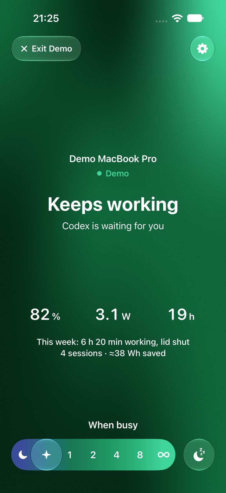

Close the lid.
Your AI keeps working.
Nocturnal keeps your laptop awake while Claude Code, Codex and other agents work, saves the battery while it's shut, and lets it sleep when they're done.
brew install --cask 12alexanderbell-graham/nocturnal/nocturnalOr download the app. macOS 14 or later.
Download for Windows
Beta. Windows 10 or 11. Unzip, open Nocturnal; if Windows warns you, choose More info › Run anyway.
Download for Linux
Beta. Any distro with systemd. Unpack it and run ./install.sh.
Free and open source.

